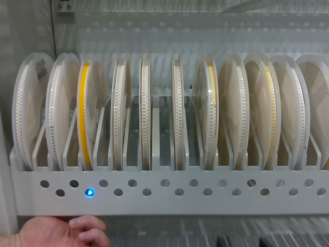
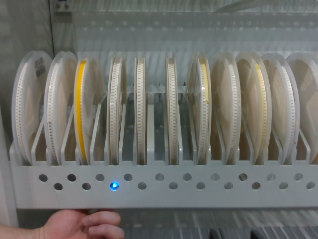
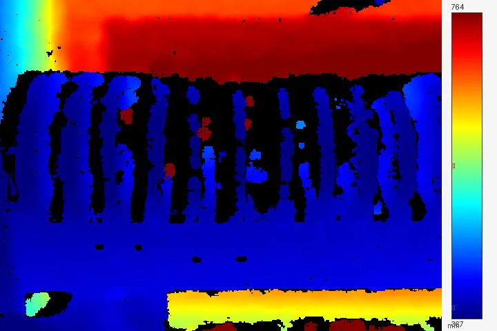
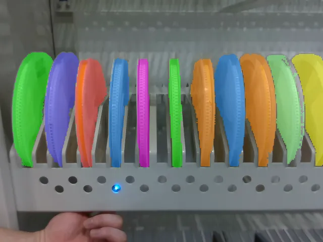
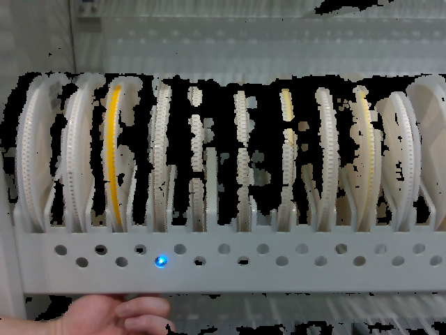
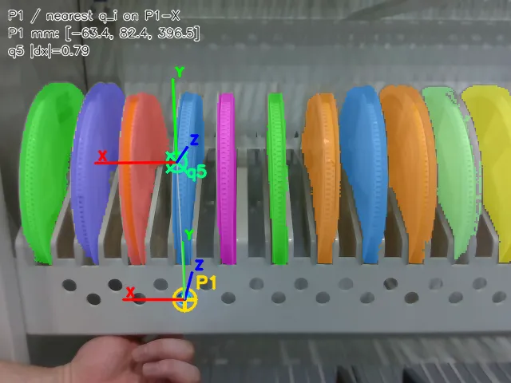
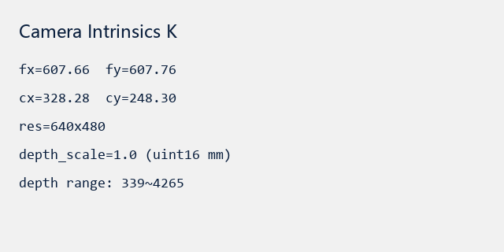

密排货架、正对只见前半盘面：先讲清模型结构与推理，再用专用 SOPE + 三路标签从零训 Score / Energy。
料盘正面朝向货架口竖插槽位：相机只能看到前半盘面，后半藏进货架深处。密排时实例互相遮挡，点云残缺。分布差太大，微调收益有限。







第一次接触 GenPose2：先搞清它吃什么、吐什么，再看三网结构和推理怎么跑。
GenPose2（论文 GenPose++）做实例级 6D 位姿 + 包围盒尺寸。不负责分割——输入已含实例 mask。
把所有可能的 6D 位姿想成一张地形图：山越高 = 在这份点云下越像真姿态。这张图就叫条件分布 p(位姿 | 观测)。
对称圆盘 + 仅见前半盘面时，不要强行学满完整旋转群。
样本 = RGB-D + mask + 姿态标签。标签可以来自 CAD 仿真真值，也可以来自既有工程的推理结果。
三路统一落盘为 SOPE（color / depth / mask / meta），再喂 GenPose2 训练管线。
GenPose2/data_factory：smt_tray.PLY / STEP → 渲染 RGB-D + mask，姿态来自仿真位姿（真值）。
工程路径：/home/ubuntu/stephen/01-code/smt_pose_sim
用其推理结果作为样本的姿态标签（伪标签 / 教师标签）。
工程路径：/home/ubuntu/stephen/01-code/Gen6D
用抓取位姿估计的推理结果作为样本标签；下游格式对齐 xyzrxryrz（mm / °）。
可用 UI「SAM3 + GenPose2」或离线四件套对比；抓取字段看 xyzrxryrz（mm / °，对齐 Gen6D）。
单卡 4090 + Adam；CAD 默认 600/200，B/C 可扩；Score 50 epoch / bs 128；监督 xyz + 法向。